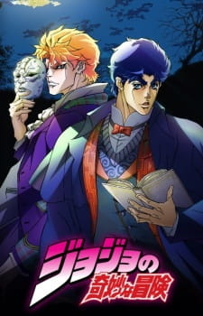

Тип: TV Сериал
Эпизоды: 9(В сезоне 26)
Длительность эпизода: 24 мин.
Дата выпуска: 2012 г.
Жанры: Экшен Приключения Сверхъестественное Вампиры Сёнен
Рейтинг: R-17
Лицензировано: Netflix
Лицензировано в РФ под названием: Невероятные приключения ДжоДжо: Призрачная кровь
По-японски: ジョジョの奇妙な冒険
По-английски: JoJo's Bizarre Adventure

Призрачная кровь/Phantom Blood
Информация
Описание
Великобритания, XIX век. Джонатан Джостар, он же ДжоДжо, счастливо живёт в особняке со своим отцом. И вот у его семьи случается пополнение — отец семейства Джордж Джостар усыновляет странного паренька по имени Дио Брандо. Джонатан рад — у него появится новый друг. Однако Дио вовсе не настроен проявлять дружелюбие. Он задумал избавиться от единственного наследника Джостаров и заполучить всё их состояние себе. Мало того, что он избил Джостара-младшего в спарринге по боксу, настроил его друзей против Джонатана, так ещё и украл первый поцелуй у его девушки! Как будто этого мало, Дио сжигает в печи любимую собаку Джонатана — Денни. Но хуже всего то, что Дио тоже лыком не шит — на людях он ведёт себя как образцовый джентльмен. Тут терпению ДжоДжо приходит конец...
Персонажи
Манга
Саундтрек
Смотреть